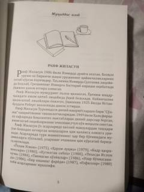

MADengizdan topib olingan chaqaloq va baliqchi oilasining taqdiri haqidagi ta'sirli hikoya.
Asarda Sayfi kapitan ismli baliqchining dengizda topib olgan chaqaloq va yangi qayiq bilan bog'liq hayotiy voqealari hikoya qilinadi. Muallif turk jamiyatidagi ijtimoiy muammolarni va insoniy qadriyatlarni o'ziga xos uslubda yoritib beradi.